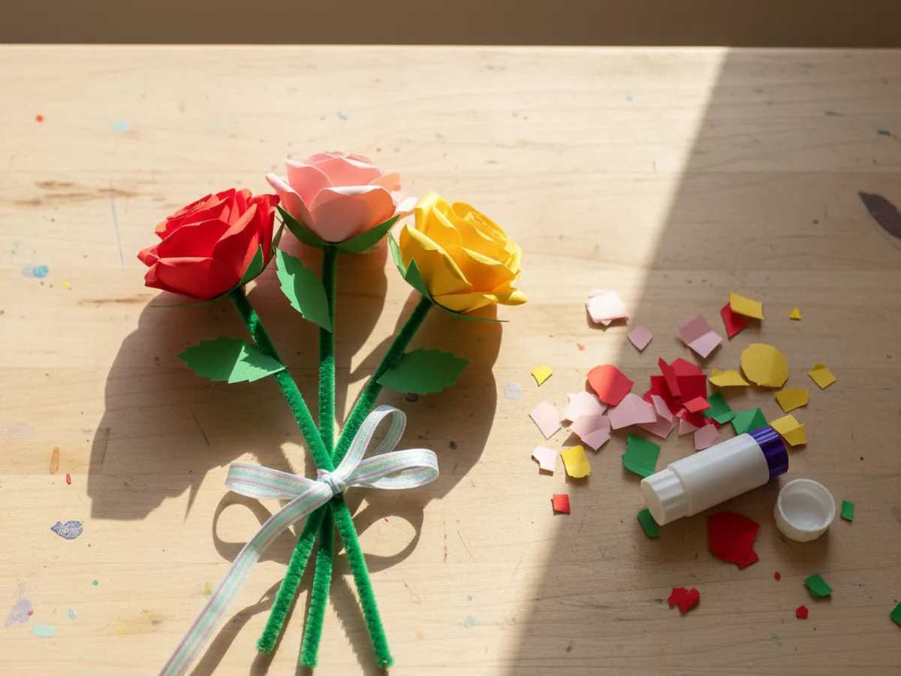
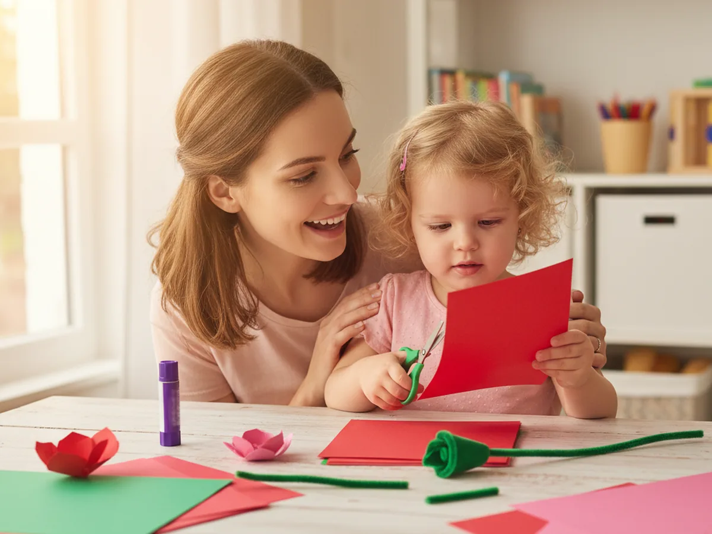
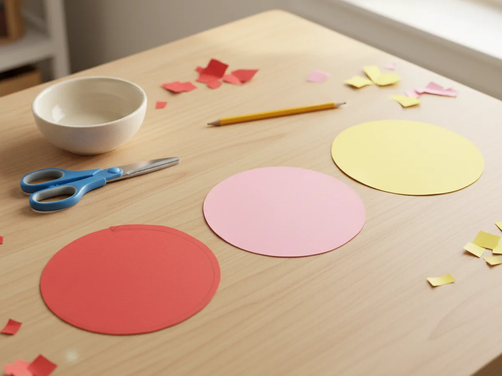
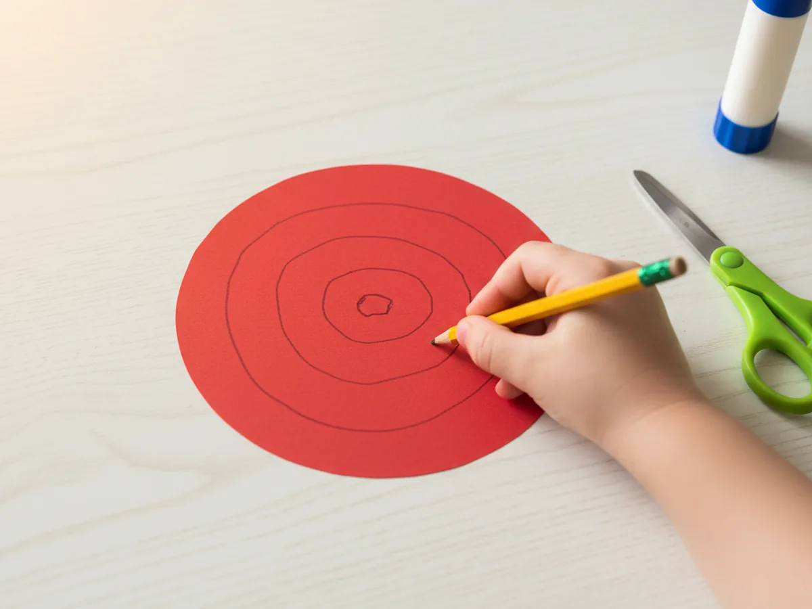
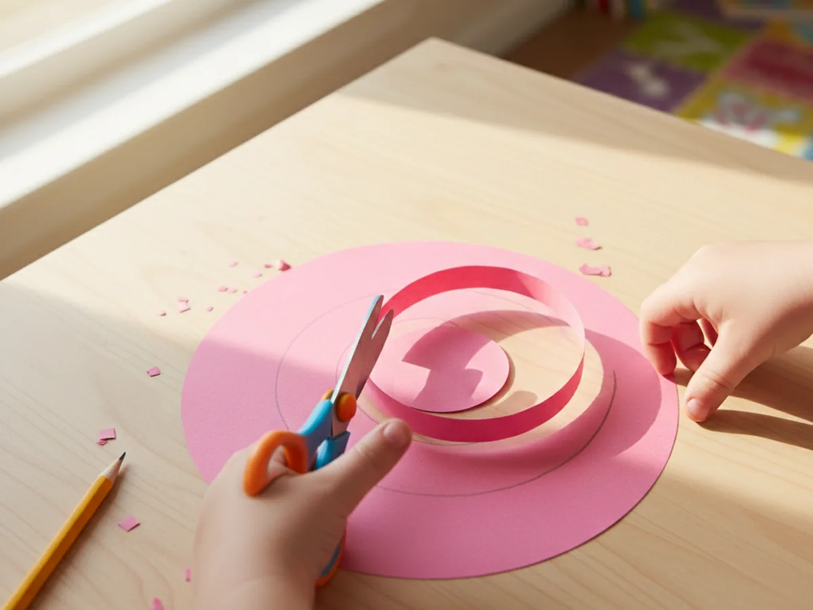
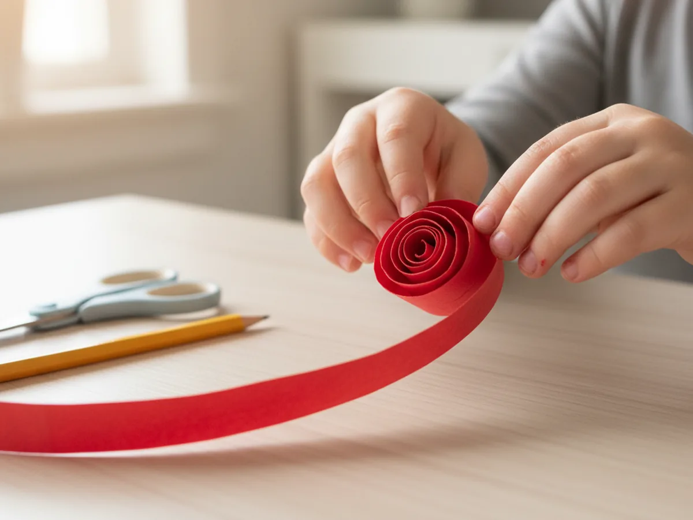
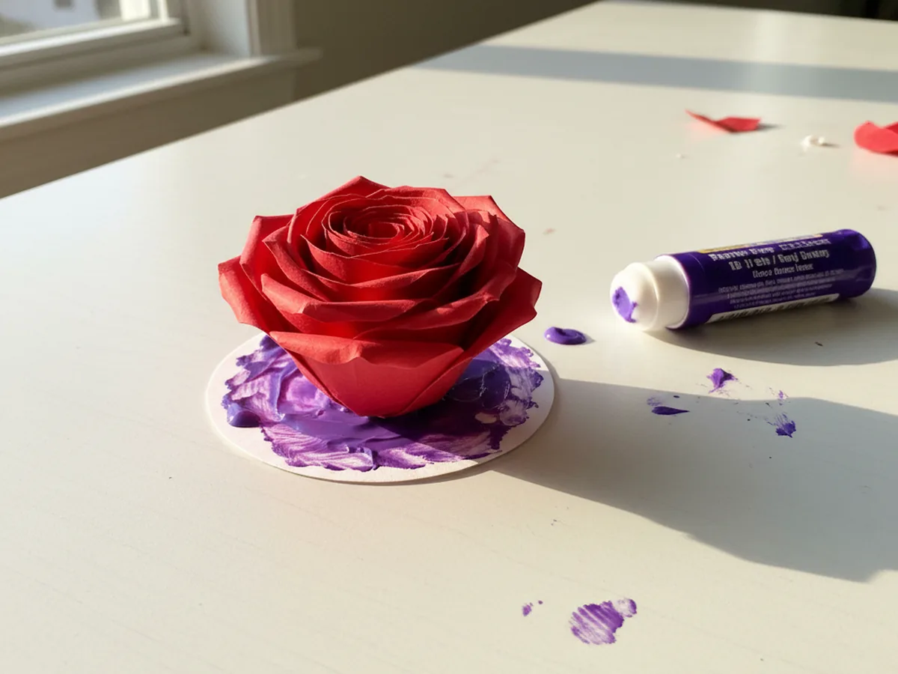
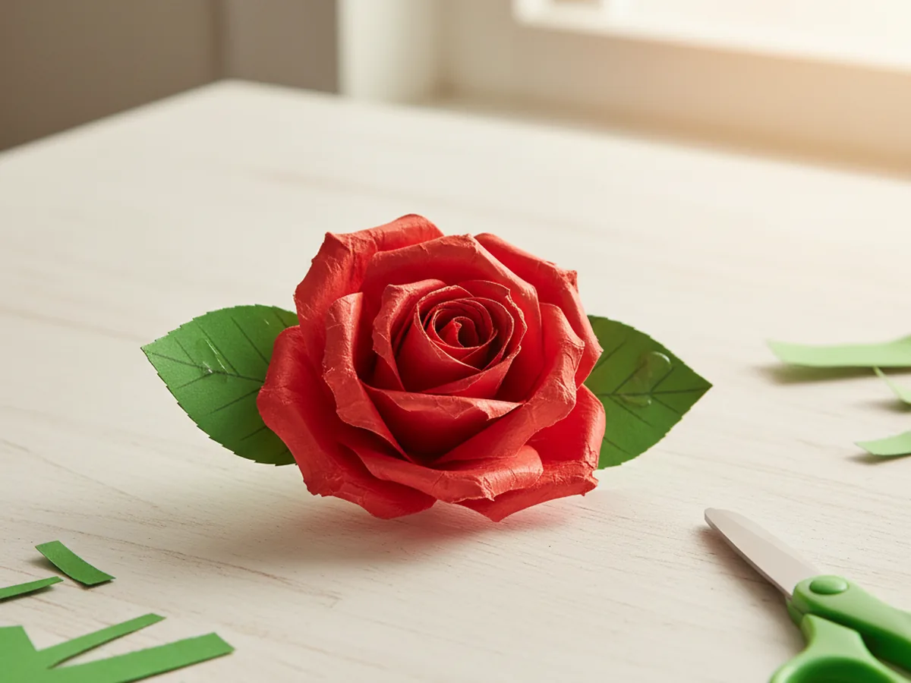
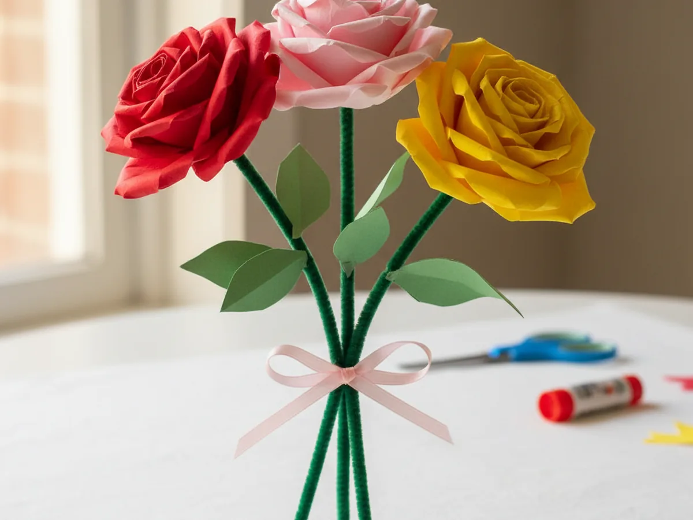

If you have ever wanted a craft that feels just a little bit fancy without being even slightly stressful, this paper roses craft is the one. With nothing more than a few sheets of construction paper, scissors, and a glue stick, you and your little one can roll up the sweetest little roses in about 30 minutes. The finished flowers look surprisingly elegant, and yet the technique is simple enough that even brand new crafters can pull it off beautifully. 🌹
This easy paper roses craft is a beautiful afternoon project for moms and kids any time of year, but it really shines around birthdays, Mother's Day, teacher gifts, and quiet rainy days. The spiral-cut method is the kind of foolproof technique that always works, even if your scissors wobble a little. By the end you will have a small bouquet of paper roses that looks absolutely lovely tied with a ribbon or popped into a tiny vase on the kitchen windowsill.
Why Kids Love This Craft
There is something genuinely magical about watching a flat paper spiral suddenly turn into a rose. That moment when your child rolls the strip and sees a little bloom appear in their hands almost always gets a wide-eyed gasp. It feels like a real grown-up craft, which makes kids beam with pride from the very first attempt.
This simple paper roses craft is also a quiet, calm activity, which is rare and precious. There is no paint to spill, no glitter to sweep up, and no glue puddles. Just a peaceful little rolling motion that helps build focus, patience, and fine motor skills. Kids who tend to bounce off the walls often surprise their moms by sitting still and rolling rose after rose for half an hour.
And of course, the finished result feels like a real gift. Kids love handing over a paper rose to grandma, dad, a teacher, or a sibling. The craft turns a regular afternoon into a sweet little moment of generosity, where your child gets to feel like the giver. That feeling sticks with them long after the roses go in a jar on the counter. 💛

What You'll Need
Here is everything you need for this paper roses craft tutorial. Lay the supplies out on the table before you start so your little one can dive in without waiting.
- Crayola Construction Paper (240 sheets, assorted colors), the red, pink, yellow, and green sheets are exactly what you need for the petals and leaves.
- Fiskars Pointed-Tip Kids Scissors, easy for small hands to control on the curved spiral cut.
- Elmer's Disappearing Purple School Glue Sticks (30 pack), washable and dries clear, perfect for holding the rolled roses together.
- Pipe Cleaners (1050 pieces, 30 colors), the green ones make instant flexible stems for your finished roses.
- Crayola Broad Line Markers (10 classic colors), optional, for adding a soft outline to the spiral or drawing tiny details on the leaves.
- A pencil, for drawing the spiral on the paper circle.
- A round object like a small bowl or a roll of tape, for tracing the paper circle.
Step-by-Step Instructions
This paper roses craft moves through seven gentle steps, and each one builds nicely on the last. Take your time and let your child do as much as they comfortably can. Even if their first rose looks a little wonky, the next one will be even better.
Step 1: Cut a Paper Circle
Start by tracing a circle about four inches across onto a piece of red, pink, or yellow construction paper. A small bowl or a roll of masking tape works perfectly as a template. Cut the circle out with kid scissors. This circle is the entire body of your rose, so feel free to make a few in different colors before moving on so your child has a little bouquet of starting shapes ready to go.

Step 2: Draw the Spiral
Place the paper circle flat on the table and use a pencil to draw a wavy spiral inside it. Start at the outer edge and curve gently in toward the center, keeping about half an inch of space between each loop. The spiral does not need to be perfect, and a slightly wavy line actually gives the finished rose more natural-looking petals.
Younger crafters can simply trace over a wavy line you have already drawn. Older kids will love drawing their own freehand and watching how their unique spiral shapes a one-of-a-kind rolled paper rose.

Step 3: Cut Along the Spiral
Now carefully cut along the spiral line all the way to the center. Try to keep cutting in one continuous motion so the paper turns into one long curling strip with a small disk left at the very middle. That little disk is the base your rose will sit on, so do not cut all the way through it.

Step 4: Roll the Rose
Pick up the outer end of the spiral and start rolling it tightly toward the center. Keep the rolled edge fairly snug at the start so the very tip of the rose looks closed, like the heart of a real rose bud. As you roll inward, you can let the petals loosen up slightly, which gives that gorgeous open-bloom effect.
This is the magic moment of the whole paper roses craft. You will feel a flat strip of paper transform into a real little flower right between your fingers. ✨

Step 5: Glue the Rose to Its Base
Once you reach the center of the spiral, hold the rolled rose firmly between your fingertips. Carefully turn it upside down so the small center disk you saved earlier is now visible at the bottom. Apply a generous swipe of glue stick to that little disk, then press the rolled rose down onto it and hold for ten to fifteen seconds. This anchors all the layers in place so the rose keeps its shape.
If you let go and the petals start to bounce loose, just press again and add a tiny extra dab of glue between the outer petals. A washable glue stick works beautifully here and will not soak through the paper.

Step 6: Add the Green Leaves
Cut two simple leaf shapes from green construction paper, each about two inches long with a gentle pointed tip. They do not need to be identical. Slightly different leaves actually look more natural. Add a little glue to the bottom of each leaf and press them onto the back of the rose so they peek out from below the petals.
If your child is feeling fancy, draw a soft vein down the middle of each leaf with a green marker before gluing. It is a tiny detail that makes the finished handmade paper rose look extra polished.

Step 7: Add a Pipe Cleaner Stem and Make a Bouquet
Take a green pipe cleaner and bend a small loop or hook at one end. Press that loop firmly against the back of the rose and add a dab of glue to keep it in place. Once the glue grabs, the rose will sit beautifully on top of a flexible green stem, and your child can bend it any way they like.
Make three or four roses in different colors and gather them into a little bouquet. Tie the stems with a piece of ribbon, twine, or a strip of construction paper. Pop the bouquet into a small jar or hand it to someone special. Watching your child proudly carry a homemade bouquet of construction paper roses is the kind of moment that quietly makes your whole week. 🌷

Variations to Try
Tissue Paper Rose Version: Swap the construction paper for soft tissue paper to create a much fluffier, more delicate rose. Tissue paper is harder to cut precisely, so try cutting strips instead of spirals and gathering them at the bottom into a rose shape. The result has a romantic, ruffled look that is perfect for Mother's Day cards.
Mini Rose Card Version: Make smaller roses using paper circles only two inches wide, then glue three or four of them onto the front of a folded cardstock card. Add a hand-drawn stem and leaves with a green marker around the roses. It instantly turns the project into a finished greeting card your child can sign and gift.
Rose Wreath Version: Make eight to ten paper roses in different colors and glue them around a paper plate with the center cut out. Add green paper leaves between the roses to fill any gaps. The whole wreath looks gorgeous hung on a child's bedroom door, especially in soft pinks and creams for a spring or Easter display.
Final Thoughts
This paper roses craft is one of those gentle, deeply satisfying afternoon activities that lets you slow down and really enjoy a little time together. The supplies are simple, the process is calming, and the result feels surprisingly elegant for how easy it is. Whether your kids gift their finished roses or display them in a little vase, you both end up with a sweet handmade keepsake and a quiet shared memory to go with it.
If your child rolls up their own paper roses, I would love to see them. Save this article on Pinterest so other craft-loving mamas can find it easily. Happy crafting!
More Crafts You'll Love
If your little one enjoyed making these paper roses, they will adore these other gentle paper flower projects too: